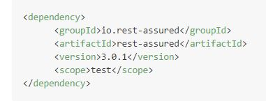
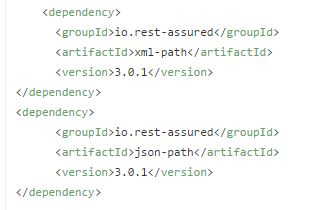

Welcome to Rest-Assured.
Reference URL : rest-assured. To start using Rest-Assured you need the following dependency:
Dependency 1:

Dependency 2 & 3:

If you Add the 1st dependency the 2nd & 3rd will be automatically added. No need to add them separately. Also you can download only 2nd or only 3rd without downloading 1st one. The following functionality will be provided by the 2nd & 3rd dependency.
Example 1 - JSON
Assume that the GET request (to http://localhost:8080/lotto) returns JSON as:
- {
- "lotto":{
- "lottoId":5,
- "winning-numbers":[2,45,34,23,7,5,3],
- "winners":[{
- "winnerId":23,
- "numbers":[2,45,34,23,3,5]
- },{
- "winnerId":54,r
- "numbers":[52,3,12,11,18,22]
- }]
- }
- }
REST assured can then help you to easily make the GET request and verify the response. E.g. if you want to verify that lottoId is equal to 5 you can do like this:
get("/lotto").then().body("lotto.lottoId", equalTo(5));
or perhaps you want to check that the winnerId's are 23 and 54:
get("/lotto").then().body("lotto.winners.winnerId", hasItems(23, 54));
Note: equalTo and hasItems are Hamcrest matchers which you should statically import from org.hamcrest.Matchers.
Note that the "json path" syntax uses Groovy's GPath notation and is not to be confused with Jayway's JsonPath syntax.>